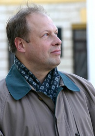
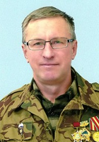
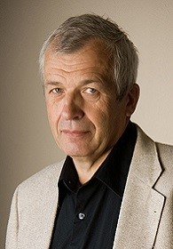
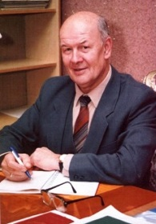
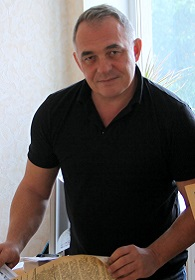

Учредители ВГОО «СП
«Воинское содружество»»
Кашкин Сергей Николаевич
 Родился 8 мая 1970 г. в Воронеже. Выпускник педагогического класса МБОУ СОШ №66 (ныне Лицей №7) г. Воронежа. Окончил физико-математический факультет ВГПИ (1992) и дневную аспирантуру ВГПУ с отличием (2001). Кандидат педагогических наук (2006). Член союза писателей «Воинское содружество» (2010). Член-корр. МОО «Петровская Академия Наук и Искусств» (2014). Председатель правления ВГОО «Союз писателей «Воинское содружество» (2015). С участием автора опубликовано 75 научных статей и научно-методических публикаций для педагогов системы профобразования, учителей технологии, воспитателей дошкольных образовательных организаций. Стихи, проза публиковались в изданиях на региональном и общероссийском уровне: «Учительская муза» (2001), «Неизвестные об известном»(2002), «От сердца к сердцу» (2003), «Цвета радуги» (2005), «Учительская муза-2» (2006), «Созвездие» (2007), «Кладезь мыслей» (2010), «Учительская муза-3» (2010), «Батюшка Дон – река мужества, стойкости и героизма» (2010), «Отец» (2012), «Золотая лира» (2012), «Песенное сияние» (2013), «Учительская муза-4» (2014), «Образ сердцу милый» (2014), «День Победы – праздник на века!» (2015), «Вечные ценности» (2016). С 2016 г. редактор-составитель и соавтор журнала «Литературное созвездие» – основного печатного органа ВГОО «СП «Воинское содружество».
Дьяконов Александр Сергеевич
 Родился 23 января 1960 г. в селе Нижний Мамон Верхнемамонского района Воронежской области. В 1986 г. окончил Воронежский политехнический институт. Участвовал в боевых операциях в горах Афганистана. Награждён медалями: «Воину-интернационалисту», «70 лет Вооружённых Сил СССР», «От благодарного афганского народа». Воинское звание — старший лейтенант. Работает на Воронежском механическом заводе. Победитель в номинации «Лучший поэтический голос завода» 2010 г. Печатался в журналах: «Воронеж», «Вестник», «ЛИК», «Воинское содружество», газетах: «Импульс», «Берегиня», «Донская новь», «Здравствуй». За стихотворения, посвященные селу и сельским труженикам, ему присвоено почётное звание «Гордость нашего села».
Батраченко Виктор Степанович
 Родился 27 мая 1943 г. в Перми. Окончил Воронежский политехнический институт в 1966 г., подполковник в отставке, автор 130 научных трудов и 38 изобретений, кандидат технических наук. В настоящее время – доцент ВГПУ. Имеет публикации в периодических изданиях России, США, Армении, Украины. Изданы пять книг стихов, участвовал в 30 коллективных сборниках, вышедших в России и Казахстане. Имеются переводы на украинский, английский языки. Неоднократный призёр международных поэтических конкурсов. Член литературного экспертного совета авторского литературного журнала «Северомуйские огни», руководитель поэтического клуба «Откровение» при ВГПУ.
Соловьев Михаил Николаевич
 Родился 29 мая 1939 г. в г. Череповец Вологодской области. В Воронеже с 1943 г. Окончил механический факультет Воронежского технологического института. С 1973 г. – на заводе синтетического каучука им. С.М. Кирова. Участник и организатор художественной самодеятельности, актёр Народного Театра при ДК им. Кирова (реж. – И.Т. Бобылёв, А.П. Чернов). Первые публикации в многотиражной газете «Кировец» (ред. А.А. Ионкин). Позднее публиковался в периодике с 2002 г. Его стихи звучат в программах Воронежского радио. Лауреат областного конкурса поэзии «Наш мир» (2001). Ряд поэтических произведений положен на музыку. С 2009 г. в Союзе писателей «Воинское содружество». С 2006 г. — руководитель поэтического клуба детей и юношества «Левобережье» при музее-диораме.
Кириченко Владимир Владимирович
 Родился 18 августа 1964 г. в Новосибирске. Окончил Львовское высшее военно-политическое училище (1985 г.), Гуманитарную академию Вооруженных сил (г. Москва) (1995 г.). Профессиональный военный журналист, писатель-публицист. Неоднократный победитель литературных конкурсов в номинациях «Армия и общество», «Военное образование», «Патриоты России» и др. Автор нескольких сборников, очерков и рассказов. Книга «Посмотрите нам в глаза» (2003 г, КЖИ «Граница») отмечена специальной наградой. Редактор газеты «Патриот» Военного учебно-научного центра Военно-воздушных сил «Военно-воздушная академия имени профессора Н. Е. Жуковского и Ю. А. Гагарина».
Список членов ВГОО «СП «Воинское содружество»»
(обновлён 07.11.2021 г.)- Авдеев Николай Николаевич
- Бегенев Илья Михайлович
- Бугрим Владимир Александрович
- Быкова Людмила Васильевна
- Воронова Наталья Игнатьевна
- Вощинский Александр Васильевич
- Высоцкая Наталья Валерьевна
- Долгих Михаил Юрьевич
- Дьяконов Александр Сергеевич
- Жерегеля Вера Михайловна
- Загорская Марина Максовна
- Землянова Алла Ивановна
- Кашкин Сергей Николаевич
- Кириченко Владимир Владимирович
- Кириченко Игорь Владимирович
- Кистинёва Лариса Алексеевна
- Корвяков Владимир Кириллович
- Костенко Ольга Борисовна
- Лаврова Зинаида Фёдоровна
- Летуновский Петр Валентинович
- Логачева Полина Васильевна
- Лопатина Любовь Николаевна
- Лукина Виктория Львовна
- Макокина Елена Сергеевна
- Мартынова Лилия Дмитриевна
- Партолина Тамара Николаевна
- Пигарев Виктор Егорович
- Римская Ирина Викторовна
- Сапанюк Владимир Михайлович
- Солдатов Александр Иванович
- Соловьев Михаил Николаевич
- Солодовникова Ираида Николаевна
- Старова Эмма Михайловна
- Струтинский Владимир Владимирович
- Тишанинова Надежда Васильевна
- Тютин Сергей Федорович
- Филонов Александр Николаевич
- Часовских Нина Петровна
- Щигрова Татьяна Михайловна